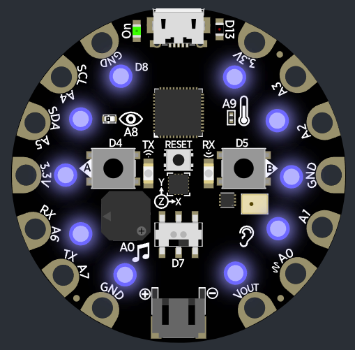
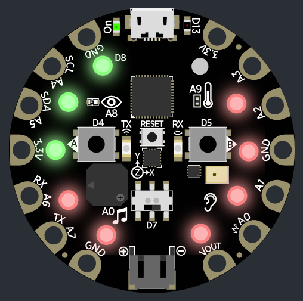
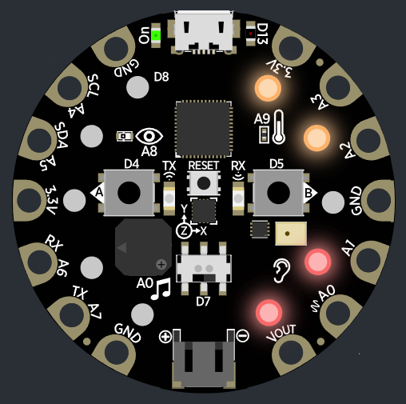

Het werkt met de Circuit Playground Express
je zet de timer met A en B of via Tijdsslot

- de tijd op de timer staat aangegeven met met voor elke 10 minuten een blauw lampje aan.

- als je jouw vinger op de groene lichtjes legt controleert het jouw hartslag
- De rode lichtjes geven aan of je hartslag laag of hoog is in groen,oranje en rood

- de oranje lichtjes geven de temperatuur aan en de rode het geluid in groen, oranje en rood
- A telt tijd van de timer op/ gaat naar het hartritme checker toe
- B telt tijd van de timer af/ gaat naar het temperatuur en geluid checker toe
- wanneer A+B tegerlijkertijd indrukt start/stopt de timer
Hoe het precies werkt
als je AB drukt neemt het de timer van de website, tenzij je het op locatie instelt.
De website verzend via een playground IR van de timevalue en het aanzetten naar de timers.